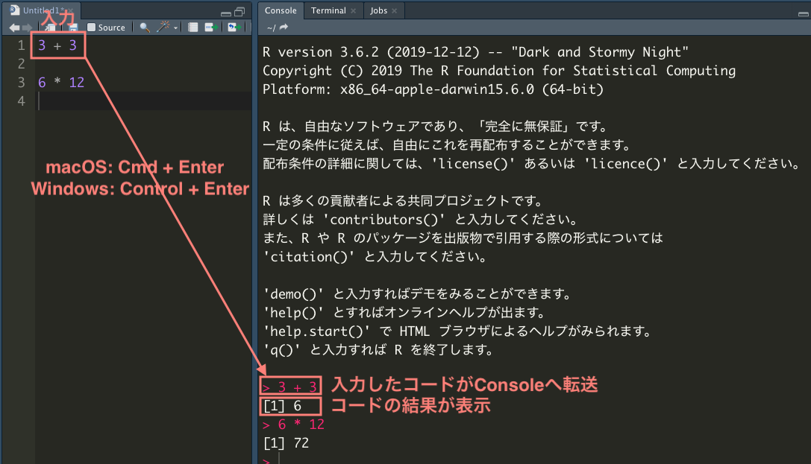

[1] 6[1] 16Rを使い始める前に、コンピュータについて最低限知っておいてほしい基礎知識について説明する。
まず、コンピュータ上のファイル名について説明する。
コンピュータの中には、様々な種類のファイルが含まれている。例えば、多くの人は Microsoft Word や Microsoft Excel のファイルを作ったことがあるだろう。Word や Excel で作ったファイルは、基本的にはそれぞれ専用のソフトウェア（アプリ）で開く必要がある。Word で作ったファイルをExcel で開くことや、Excel で作ったファイルを Wordで開くことなどはできない。
ユーザが特に意識しなくても、Word で作ったファイルを [ダブル] クリックすれば Word が起動してそのファイルを開くし、Excel で作ったファイルを [ダブル] クリックすれば Excel が起動して開きたいファイルが開かれる。仮に、Word のファイルとExcelファイルのファイル名が同じ kadai01 だとしても、パソコンは正しいアプリを選んでくれる。パソコンがファイルを区別し、正しいアプリを起動してくれるのはなぜだろうか。
実は、各アプリで作ったファイル名は、自分で名前を付けた部分（上の例では kadai01）の後に続きがある。 Word で作ったファイルには自動的に “.docx” が付けられ、Excel の場合には “.xlsx” が同様に付けられている。 したがって、自分では両方のファイルにまったく同じ kadai01 という名前を付けたつもりでも、実際には、kadai01.docx と kadai01.xlsx という別のファイル名が付いている。 この仕組みにより、パソコンは正しいアプリを選択することができる。ファイル名の末尾に .docx があるファイルがクリックされれば Word を、.xlsx があるファイルが選択されれば Excel を開くのである。
ファイル名の末尾にあってファイルの種類を区別する部分のことをファイル名拡張子 (filename extension) と呼ぶ。上の例からわかるとおり、ファイル名拡張子はファイルの種類を区別する重要情報である。プログラミングをしないパソコンユーザにとっては、ファイルの種類の違いを気にせずにパソコンを使えたほうが便利なので、パソコン購入時の初期設定ではファイル名拡張子が非表示になっている場合がある。しかし、プログラミングをする場合（つまり、この本を読んでいるあなた）は、ファイル名拡張子が見えないと困る。
例えば、Rは様々な形式で保存されたデータファイルを扱うことができるが、種類に応じてデータを読み込む方法（読み込みに使う関数）が異なる。ファイル名拡張子でファイルの種類を区別し、どの方法を使うかを決めるので、拡張子が表示されていないと不便である（MacのFinderやWindows のエクスプローラーで「ファイルの種類」を確認できるので、絶対無理というわけではないが、面倒くさい）。よく使うデータファイルのファイル名拡張子として、次のものがある。
後の章で説明するが、この他にも種類がある。ファイルの種類がわからないと、様々な方法を試行錯誤することになってしまい、効率が悪い。ファイル名拡張子があればファイルの種類がわかるので、正しい方法を選んで作業を進めることができる。
よって、Rユーザ（あるいはその他のプログラミングをする者）にとって、ファイル名拡張子の表示は必須である。自分のパソコンでファイル名拡張子が表示されていないなら、ファイル名拡張子を表示する設定に変えよう。macOS では、Finder の 環境設定 (Preferences) で、詳細設定 (Advanced) タブを開き、「すべてのファイル名拡張子を表示する (Show all filename extensions)」にチェックマークを付ける。 Windows では、エクスプローラー (Explorer) （注意：インターネットエクスプローラーではない。画面下部のタスクバーに表示されている、黄色のフォルダのアイコン）を開き、上部の [表示]タブをクリックする。すると、「ファイル名拡張子」という項目があるので、チェックマークを付ける。チェックマークを付けたら、Word ファイルに .docx （または .doc）、Excelファイルに .xlsx （または .xls）、PDFファイルに .pdf などが付いていることを確認しよう。
ファイル名は、ファイルの中身がわかるように付けるのが基本である。例えば、日記を書いて保存するなら、diary_20200701.txt, diary_20200702.txt のように名前を付ければ、特定の日付の日記であることがすぐにわかる。
また、他人にファイルを渡す必要があるときは、相手の立場になってファイル名を付けるのが望ましい。例えば、比較政治学 (Comparative Politics) の授業のレポートをWord で書く場合を考えよう。レポートを書いている本人にとっては、cp_report.docx というファイル名で中身がわかるので問題ないだろう。しかし、これをメールに添付して担当教員に提出する場合はどうだろうか。受講生が100人いて、全員がこの名前でレポートを提出してきたら、担当教員の元には同じ名前のファイルが100個届く。これでは、担当教員は困ってしまう。つまり、cp_report.docx というファイル名は、受け取る相手のことを考えていない、思いやりのないファイル名である。代わりに、学籍番号（例：123456789）を使い、cp_report_123456789.docx のようにすると、ファイル名の重複がないので、受け取る相手（私たちのことだが）は喜ぶだろう。自分が1つのファイル名を変えるのは大した手間ではないのに対し、相手が全員分のファイル名を変えるの大変な手間だということを理解しよう。
加えて、ファイル名の付け方には形式的なルールがある。ファイル名は、英数字と特定の記号（_ [「アンダースコア」、「アンスコ」、「アンダーバー」などと読む] と - [ハイフン]）のみで付けるべきだ。 ファイル名に日本語（または韓国語、中国語などのマルチバイト文字）を使うのは愚かなのでやめよう。日本語のファイル名でも問題ない場合が多いのは確かだが、問題がある場合もあるので使用を回避するのが賢い。日本語のファイル名だと、次のような問題が起こりうる。
日本語のなかでも特に凶悪なのが「全角スペース」である。そもそも、スペースは存在に気付きにくい。万が一末尾にスペースがあると、スペースがない場合との区別が難しい。日本語（マルチバイト文字）を扱えないプログラムでは、半角スペースなら問題ないが、全角でスペースだと問題が起きることがある。しかし、目視で半角スペースと全角スペースの区別をするのは非常に困難である。よって、スペースは使うべきではないし、全角スペースは絶対に使ってはいけない。
また、ファイル名の最初の1文字はアルファベットにすることが望ましい。ファイルを並べ替えるときに、数字だとややわかりにくいところがある。例えば、1.txt, 12.txt, 110.txt という3つのファイルをファイル名で並べ替えると、1.txt, 110.txt, 12.txt という順番になる。多くの場合、これはユーザが期待する順番ではない。中身がわかるようにという大原則にしたがえば、アルファベットから始まるファイル名が自然に選ばれるだろう。
ファイル名の付け方をまとめると、次のようになる。
_, - のみで付ける。
.（ドット; ピリオド）は使わない（ファイル名拡張子との混同を避けるため）。my diary.txt というファイル名の代わりに、my_diary.txt または myDiary.txt、MyDiary.txt などのファイル名を使う。
my_diary.txt のように単語をアンスコで繋ぐ書き方をスネークケース (snake case) [_ が地を這うヘビである]、myDiary.txt のように単語の1文字目を大文字にして前の単語と区別する書き方をキャメルケース (camel case) [大文字部分がラクダのコブである] と呼ぶ。ただし、次のような例外もある。
. である。
.Rprofile と .Renviron がある。_ や # などの記号からファイル名が始まるものもある。次の節で説明するフォルダ（ディレクトリ）の名前を付ける際も、基本的にはファイル名と同じルールに従うことが望ましい。
次に、ファイルシステムについて解説する。私たちが使用しているコンピュータには、数千〜数万（あるいはそれ以上）のファイルが含まれている。これらのファイルは基本的には1つのドライブ (ハードディスクドライブ [Hard Disk Drive; HDD] またはソリッドステートドライブ [Solid State Drive; SSD]） に保存されているが、ドライブの中にあるファイルはグループ化・階層化されて保存されている。
図 6.1 はファイルシステムの例を示している。矢印の左側には、ドライブ内にあるファイル（の一部）が示されている。通常、これらのファイルは矢印の右側に示されているように、階層化されている。

図 6.1 の左側にある Diary_YYYYMMDD.txt がYYYY年MM月DD日の日記を保存したテキストファイルだとしよう1。 3年間毎日日記を書くと、それだけでファイル数は1000個以上になる。また、Analysis_blahblah.R はRスクリプトである2。Rスクリプトファイルも複数ある。さらに、上の図には表示されていないが、自分で作ったファイル以外に、OSやソフトウェア（アプリ）を構成するファイルもドライブ内に保存されているだろう。これらのファイルが整理されずに1つの場所にまとめて置いてあるとしよう（上の図の左側の状態）。そうすると、特定のファイルを開いたり、それぞれのファイルがどのような目的で存在するのかを把握したりするのに少なからぬ労を要する。
単に面倒なだけならいい（私たちは面倒なことが大嫌いなので良くないと考える）が、ファイルの置き場が1つだけだと解決できない問題がある。それは、ファイル名の重複が許されないということだ。世の中には、特定の目的のために使われる「お決まりのファイル名」というものがある。例えば、GitHubにレポジトリを追加するときは、そのレポジトリについて説明する README.md というファイルを作ることになっている。しかし、名前が同じだとファイルが区別できないので、同じ場所にまったく同じ名前のファイルを2つ置くことはできない。したがって、ドライブ内にファイル置き場が1つしかないとなると、1つのパソコンで作れる README.md は1つだけということになってしまい、困ってしまう。
そこで、多くのOSではファイルをグループ化して管理するという方法が採用されている。このグループのことを「フォルダ (folder)」または「ディレクトリ (directory)」と呼ぶ3。
上の図の右側は、ファイルをフォルダに分けた様子を表している。 日記のテキストファイルに注目すると、まず、“Diary” という名前のフォルダがあり、Diary フォルダの中に年ごとのフォルダ “2018”, “2019”, “2020” というフォルダがある。それぞれの年のフォルダの中には、“January”, “February”, \(\dots\), “December” という月ごとのフォルダがある。そして、それぞれの月のフォルダの中に、日付がファイル名になったテキストファイルd_01.txt, d_02.txt, \(\dots\) が保存されている。この例からわかるように、フォルダの中にフォルダを作り、そのフォルダの中にフォルダを作り \(\cdots\) ということができるので、フォルダを入れ子にした階層構造を利用してファイルを管理することができる。
ファイルを階層化して管理する場合、フォルダの構造と場所を把握することが必要になる。そのために使われるのがパス (path) である。パスは、コンピュータ内の住所のようなものだと考えればよい。例えば、“Diary” フォルダ内の “2018” フォルダ内の “January” フォルダ内の “d_01.txt” というファイルのパスは、Diary/2018/January/d_01.txt である。この例からわかるように、パスにはフォルダ名やファイル名がそのまま使われる。そして、フォルダの「中」であることは、/ （スラッシュ）記号によって表される。例えば、Diary/ の部分が、Diary フォルダの中であることを示す。ただし、Windows では / の代わりに \（バックスラッシュ）または ￥（円記号; 日本語環境の場合）が使われる4。 Diary/2018/January/d_01.txt と Diary/2018/February/d_01.txt は、ファイル名だけを見れば同じ d_01.txt だが、パスが異なるので異なるファイルとして認識され、1つのドライブ内に共存することができる。
しかし、上に書いたパスは、“Diary” フォルダがどこにあるかを指定していないので完全ではない。パソコンがファイルの場所を正しく把握するには、“Diary” フォルダの置き場所がどこかという情報も必要である。
パソコン内でパスの起点になる場所は、OSによって異なる。Linux やmacOSでは、パスの起点となる最上位フォルダは / であり、多くのWindows機では C:\ （Cドライブと呼ばれる）である5。また、多くのOSでは、ドライブ内に「ホーム (HOME)」と呼ばれる特別なフォルダがあらかじめ用意されており、通常はホームフォルダの中に自分で作ったファイルを保存する。ただし、ホームフォルダの名前は “HOME” ではないので注意が必要である。例えば、macOSではユーザ名がホームフォルダの名前である。例えば、ユーザ名が yukiなら /Users/yuki/ が、ユーザ名が jaehyunsong なら /Users/jaehyunsong/ がホームフォルダのパスである。パスの先頭に / がついており、最上位フォルダの中の “Users” フォルダの中にユーザ名でホームフォルダが作られれている。
ホームフォルダの中に Diary フォルダがあるとすると、2018年1月1日の日記までのパスは、 /Users/jaehyunsong/Diary/2018/January/d_01.txt である。このように、ドライブ内の起点から書いた完全なパスを 絶対パス (absolute path) または フルパス (full path) と呼ぶ。絶対パスを使えば、コンピュータ内の特定のファイルを一意に示すことができる。 絶対パスにホームディレクトリが含まれている場合には、ホームディレクトリまでのパスを省略して ${HOME}/ または ~/ と書くことができる。よって、上の絶対パスは、~/Diary/2018/January/d_01.txt と書くことができる。この書き方を使えば、パスを書き換えることなく共同研究者とファイルを共有することが可能になる（もちろん、ホームフォルダ以下の構造を揃える必要がある）。
自分が作業・操作の対象としているフォルダは、作業フォルダ (working directory; current directory) と呼ばれる6。絶対パスの代わりに、作業フォルダから見た相対パス (relative path)を使うこともできる。例えば、現在の作業フォルダが ~/Diary/2018/ だとすると、2018年1月1日の日記への相対パスは、Januaray/d_01.txt と書ける。 作業フォルダを指定していることを明示したい場合（プログラムを実行する場合にはこれが必要なことがある）には、 ./Januaray/d_01.txt と書く。つまり、./ が作業フォルダを示す。 また、作業フォルダよりも階層が1つ上のフォルダ（親 [parent] フォルダと呼ぶ）には、../ でアクセスでききる。例えば、、現在の作業フォルダが ~/Diary/2018/ だとすると、../ は ~/Diary/ なので、 2020年1月1日の日記への相対パスは ../2020/Januaray/d_01.txt と書くことができる。
相対パスの利点は、
ということである。1は自明だろう。2は、例えば日記の一覧を作るためのプログラムを書き、それを「年」を表すフォルダに保存すれば、1つひとつの日記に毎年同じ相対パスでアクセスできる（ただし、2月29日は除く）ので、毎年同じプログラムを利用できて便利である。絶対パスを使うと、「年」の部分を毎年書き換えなければいけない。
絶対パスと相対パスは、目的に応じて使い分けることが必要である。
Rを使ったプログラミングやデータ分析を進めていくと、自分が書いたRスクリプトや作成した図表だけでなく、 Rが自動的に生成するファイルもどんどん溜まる。そう遠くない将来、ドライブ内のファイル数が数万に達しても不思議ではない。効率よくプログラミングを行うために、ファイルの管理方法を明確にしておいたほうが良い。そのためには、フォルダの階層化を利用してファイルを管理することが必要である。
しかし、フォルダによる階層化を導入すればファイルの管理が楽になるかというと、必ずしもそうとは限らない。かえって不便になる部分もある。前の節で見たとおり、フォルダを階層化すると、絶対パスが長く（複雑に）なる。ファイルを階層化によって整理したとしても、ファイルを利用するたびに長い絶対パスの入力が必要なら、ファイル管理の効率が上がったとは言えないだろう。
Rを使う場合にファイル管理の効率化を助けてくれるのが、RStudio の「プロジェクト」機能である。
Rの既定（デフォルト）の作業フォルダはホームフォルダある。分析に使うデータが、ホームフォルダの中の Documents フォルダの中の R フォルダの中の Analysis1 フォルダ内の Data フォルダにある data.csv だとしたら、このファイルにアクセスするためには、"Documents/R/Analysis1/Data/data.csv"と入力する必要がある7 \(^,\) 8。新たに作った図を “histogram.pdf” という名前でホームフォルダの中の Documents フォルダの中の R フォルダの中の Analysis1 フォルダ内の Figures というフォルダに保存するためには、"Documents/R/Analysis1/Figures/historam.pdf"と入力する必要がある。どちらもかなり面倒で、効率が悪い。
しかし、作業フォルダが、~/Documents/R/Analysis1/ だとすれば、相対パスにより、"Data/data.csv" や"Figures/historam.pdf" だけで済む。よって、作業フォルダを明示的に指定すればいいわけだが、作業フォルダを毎回指定するのも面倒だ。
そこで利用できるのが、RStudio のプロジェクト機能である。 プロジェクトとは、特定のフォルダを作業フォルダに設定し、すべての作業をそのフォルダと下位フォルダのみに限定してくれる機能である9。プロジェクト機能さえ使えば、ユーザが意識しなくても、ユーザが書いたコード、保存したデータ、作成した図などが作業フォルダ内に集約され、管理が楽になる。
では、ここからプロジェクトの作り方を説明しよう。
まずはRStudio を起動する。
RStudio が起動したら、“File” から “New Project” を選択する。


~/Dropbox/RStudy にプロジェクトのフォルダを入れることにする。ここまでできたら、“Create Project” をクリックする。
getwd() と入力すると、プロジェクトまでの絶対パスが表示される。 念のため、Finder（Macの場合）やエクスプローラー （Windows の場合）で、指定した場所にプロジェクトのフォルダ（上の例では Ch04）が生成されていることを確認しよう。 プロジェクトフォルダを開いてみると、Ch04.Rproj というファイルが生成されていることがわかる（ 図 6.6 ）。

Ch04 プロジェクトを開くには、このCh04.Rproj ファイルをダブルクリックすれば良い。RStudio が起動していない場合でも、指定のプロジェクトを開いた状態でRStudio が起ち上がる。
RStudio 右上の表示が “Project: (None)” となっているときは、プロジェクトが開かれていない。 RStudio を使う場合には、必ず右上の表示を見て、プロジェクトが開かれていることを確認しよう。 プロジェクトが開かれていない場合には、既存のプロジェクトを開くか、新たばプロジェクトを作ろう。
前置きが長かったが、ここからはRを使っていこう。まず、新しい R Script を開くために、Cmd/Ctrl + Shift + N を入力する10（“File” メニューから “New File” - “R Script” を選んでも良い）。すると、 左上の Source Pane に “Untitled1” というタブが登場し、その pane 上でコードが入力できるようになる。ここで 3 + 3 と入力し、その行にカーソルを留めたまま command + return（Mac）または Ctrl + Enter を押してみよう。command + return というのは、command キーを押したまま、return キーも押すという意味である。

Source ペイン (Untitled1) に入力したコードが Console（本書の説明どおりにカスタマイズしていれば、RStudio 内の右上画面）に転送され、計算結果が表示される。Rのコードは Console に直接打ち込むこともできるが、Sourceペインで入力してから Console に転送する方法が基本である11。 Source ペインの内容をファイルに保存すれば、後でもう1度同じコードを実行したり、コードを他のプロジェクトで再利用することができるようになる。先ほど 3 + 3 を入力した画面にカーソルを合わせ、Cmd/Ctrl + S を押してみよう。ファイルの保存を促されるので、ファイル名をつけて保存しよう。このとき、.R というファイル名拡張子を付ける。これにより、ファイルがRスクリプトとして認識される。例えば、“practice01.R” という名前をつけて保存しよう。Sourceペインの上部に表示されるタブの名前が、“Untitled1” から “practice01.R” に変わることが確認できるはずだ。
以下にRで計算する例を示すので、コードを practice01.R に入力し、command + return （Ctrl + Enter） で Console に送り、実行結果を確認しよう。背景が灰色になっている部分に示されているのが、Rのコマンドである。ただし、##から始まる部分は計算結果である。また、コードブロックのうち、 #（ハッシュ記号）で始まる部分はコメントであり、Rで評価（計算）されない。コメントの使い方については第22章で詳しく解説する。
まずは、簡単な足し算と掛け算を実行してみよう。
これ以外の基本的な演算は以下のとおりである。
| 演算子 | 意味 | 例 | 結果 |
|---|---|---|---|
+ |
和 | 2 + 5 |
7 |
- |
差 | 2 - 8 |
-6 |
* |
積 | 7 * 3 |
21 |
/ |
商 | 16 / 5 |
3.2 |
^、**
|
累乗（べき乗） |
2^3または2 ** 3
|
8 |
%% |
剰余 (モジュロ) | 18 %% 7 |
4 |
%/% |
整数商 | 18 %/% 7 |
2 |
論理演算子とは、入力した式が真か偽かを判定する演算子である。返り値（戻り値）は TRUE（真の場合）または FALSE（偽の場合）のいずれかとなる。たとえば、「3 > 2」は真なので、TRUE が返される。しかし、「2 + 3 = 1」は偽なので、FALSEが返される。実際にやってみよう。
このように、等しいかどうかを表す記号は = ではなく ==（二重等号）なので注意されたい。
論理演算子にも、いくつかの種類がある。
| 演算子 | 意味 | 例 | 結果 | |
|---|---|---|---|---|
| 1 | x < y |
xはyより小さい |
3 < 1 |
FALSE |
| 2 | x <= y |
xはyと等しいか、小さい |
2 <= 2 |
TRUE |
| 3 | x > y |
xはyより大きい |
6 > 5 |
TRUE |
| 4 | x >= y |
xはyと等しいか、大きい |
4 >= 5 |
FALSE |
| 5 | x == y |
xとyは等しい |
(2 + 3) == (4 + 1) |
TRUE |
| 6 | x != y |
xとyは等しくない |
((2 * 3) + 1) != (2 * (3 + 1)) |
TRUE |
6番目の例について少し説明する。通常の数式同様、Rも括弧()内の記述を優先的に計算する。したがって、!=左側の((2 * 3) + 1) は 6 + 1 = 7 であり、右側の (2 * (3 + 1)) は 2 * 4 = 8 である。したがって、7 != 8 が判定対象となり、TRUEが返される。! 記号は、「否定」を表すために使われるもので、!= は左右が等しくないときに TRUE を返す
上に挙げた論理演算子は基本的に数字を対象に使うが、TRUEとFALSE を対象に使うものもある。それが and を表す & と or を表す| である。。& は、& を挟む左右の両側が TRUE の場合のみ TRUE を返し、| は少なくとも一方が TRUE なら TRUE を返す。
| 演算子 | 意味 | 例 | 結果 | |
|---|---|---|---|---|
| 1 | x | y |
xまたはy
|
(2 + 3 == 5) | (1 * 2 == 3) |
TRUE |
| 2 | x & y |
xかつy
|
(2 + 3 == 5) & (1 * 2 == 3) |
FALSE |
1番の例では、|の左側は(2 + 3 == 5)であり、TRUE である。一方、右側の(1 * 2 == 3) は FALSE だ。判定対象はTRUE | FALSE となり、TRUE が返される。 2番目の例は TRUE & FALSE なので、返り値は FALSE になる。
123454321 * 2 を計算しよう。123454321 * 3 を計算しよう。123454321 * 4 を計算しよう。 これらの計算は簡単にできるだろう。しかし、123454321を3回入力するのが面倒だっただろう12。123454321という数字をxとかaに代入し、数字の代わりに x や a が使えるなら、上の計算は楽になる。ここではその方法を説明する。
xというものに123454321という数字を入れるには、<- という演算子を使う。この演算子により、xという名のもの （オブジェクト）に123454321という数字を代入することができる。ここでは「代入」という表現を使ったが13、<-の役割は代入よりも広いので、これからは「格納」という表現を使う。
<- は、< と- という2つの記号をスペースなしで入力することで作ることができる。 RStudioでは、 option + - [マイナス, ハイフン] (macOS 場合) または Alt + - （Windows の場合）で、<- が入力できる。その際、演算子の前後に半角スペースが1つずつ挿入されるので、このショートカットは必ず使うべきである。
Rを起動した時点では、x というオブジェクトは存在しない。RStudio 右下のペインにある Environment タブを開くと、現時点では何も表示されていないはずだ。しかし、x に何かを格納することで、x というオブジェクトができる。 実際に xに、123454321を格納してみよう。
Environment タブに、x が登場し、格納した数字が右側に表示されていることが確認できるだろう。
オブジェクトの中身は、オブジェクト名をそのまま入力することで表示できる。
print(x) でも同じ結果が得られるが、タイプする文字数を減らしたいので xのみにする。ただし、状況やオブジェクトの型（型については後で詳しく説明する）によっては、print() を表示しないと中身が表示されない場合もあるので、R Markdown ファイルで論文などを作成していて、結果を確実に表示したい場合には print(x) とするほうが安全である。
ちなみに、格納と同時にそのオブジェクトの中身を表示することもできる。そのためには、格納コマンド全体を() で囲む。例えば、次のようにする。
値が格納されたオブジェクトは計算に利用できるので、先ほどの計算は、次のようにできる。
文字列を格納することもできる。ただし、文字列は必ず "" か '' で囲む必要がある。
オブジェクトに格納できるのは1つの数値や文字列だけではない。複数の数値や文字列を格納することもできる。そのためには c() という関数を使う。c() のc は concatenate または combine の頭文字で、複数の要素からベクトル (vector) を作るのに使われる関数である。 c() に含む要素はカンマ (,) で区切る。
[1] 73 6 5 3 99 10 22 9 7複数の文字列を格納することもできる。
[1] "cat" "cheetah" "lion" "tiger" ひとつひとつの要素を指定する代わりに、様々な方法でベクトルを作ることが可能である。 たとえば、seq() 関数を使うと、一連の数字からなるベクトルを作ることができる。from で数列の初項を、to で数列の最終項を指定し、by で要素間の差（第2要素は第1要素に by を加えた値になる ）を指定するか、length.out で最終的にできるベクトルの要素の数を指定する。Rのベクトルの length とは、要素の数のことなので、注意されたい。
いくつか例を挙げる。
[1] 1 2 3 4 5 6 7 8 9 10 11 12 13 14 15 16 17 18 19 20[1] 11 13 15 17 19 [1] 2 4 6 8 10 12 14 16 18 20[1] 20 15 10 5 [1] 1 12 23 34 45 56 67 78 89 100[1] 73 72 71 70 69 68 67 66 このように1つの関数でも指定する内容は、by になったりlength.out になったりする。by や length.out、from、to などのように、関数で指定する対象になっているもののことを 仮引数 (parameter) と呼ぶ。また、by = 1 の1や、length.out = 10 の10のように、仮引数に実際に渡される値のことを実引数 (argument) と呼ぶ。特に誤解が生じないと思われる場合には、仮引数と実引数を区別せずに引数（ひきすう）と呼ぶ。 Rでは、1つの関数で使う引数の数が複数あることが多いので、仮引数を明示する習慣を身につけたほうがよい。 ただし、第1引数（関数で最初に指定する引数）として必ず入力すべきものは決められている場合がほとんどなので、第1引数の仮引数は省略されることが多い。仮引数が省略される代わりに、第1引数の実引数はほぼ必ず入力する（いくつかの例外もある）。
seq(from = x, to = y, by = 1) の場合はより単純に x:y とすることができる。
[1] 21 22 23 24 25 26 27 28 29 30 [1] 10 9 8 7 6 5 4 3 2 1 また、rep() 関数も便利である。例を挙げよう。
[1] 3 3 3 3 3 3 3 3 3 3[1] "a" "a" "a" "b" "c" "c"[1] "C" "C" "A" "A" "T" "T"アルファベットのベクトルは、あらかじめ用意されている。
オブジェクト名（ベクトル）の後に [抽出する要素のインデクス] を付けると、ベクトルの特定の要素を抽出することができる。ちなみに [ は関数である。Console にhelp("[") と打てば、これが Extract と言う名前の関数であることがわかる（help("[]") ではないので注意）。
ベクトルの要素を取り出してみよう。Rのインデクスは、他の多くのプログラミング言語（例えば、C, C++, Pythonなど）とは異なり「1」から始まるので注意されたい。
[1] 99[1] 6 3 10[1] 6 5 99 10 22 9 7[1] 99 10 22 [1] 1 3 5 7 9 11 13 15 17 19 さらに、TRUEとFALSEを使うこともできる。この場合、抽出したい要素の場所を指定するのではなく、それぞれの場所について抽出する (TRUE) か、しない (FALSE) かを指定する。たとえば、character_vecから1, 3, 4番目の要素を抽出するなら、[c(TRUE, FALSE, TRUE, TRUE)]と指定する。
TRUEとFALSEが使えるので、論理演算子を[]の中で使うこともできる。たとえば、numeric_vec1の各要素が偶数かどうかを判定するためには、インデックスが2で割り切れるかどうか（2で割った余りが0かどうか）を確認すれば良い。
これを利用すれば、numeric_vec1から偶数のみを抽出できる。
[ と格納（代入）を組み合わせれば、「ベクトルの一部の要素を書き換える」ことができる。たとえば、numeric_vec1の2番目の要素は5だが、これを100に書き換えたい場合、置換したい要素の場所を[]で指定し、<-で代入すれば良い。
複数の要素を置換することもできる。たとえば、偶数を全て0に置換したい場合、以下のようにする。
私たちのR - 6 基本的な操作 私たちのR: ベストプラクティスの探求 私たちのR: ベストプラクティスの探求 私たちのR
ファイル名拡張子が “.txt” のファイルを「テキストファイル」と呼ぶ。↩︎
ファイル名拡張子が “.R” または “.r” のファイルを「Rスクリプト」と呼ぶ。↩︎
本書では、フォルダとディレクトリを同義語として扱う。↩︎
これ以降、原則としてパスの表記には / を使うので、Windowsユーザはご注意を。↩︎
かつては、AドライブとBドライブがフロッビーディスクに使われていた。その名残でCドライブが使われている。↩︎
Rでは、getwd() で現在の作業フォルダを確認できる。また、setwd() で作業フォルダを変更できる。例えば、setwd("~/Diary") とすれば、ホームフォルダ内の Diary フォルダを作業フォルダに指定できる。しかし、これらの関数は基本的には使わない。この後説明するとおり、RStudio のプロジェクト機能の使用を推奨する。↩︎
Rでパスを指定するときは、パスを引用符で囲む。引用符は、"" でも '' でも良い。↩︎
file.path() を使って、file.path("Documents", "R", "Analysis", "Data", "data.csv") と書くこともできる。この書き方の利点は、/, \, ￥ を環境に応じて使い分けてくれることである。↩︎
何らかの事情により、作業ディレクトリ以外のフォルダにアクセスすることが必要なときは、絶対パスを使えば良い。↩︎
Mac では、command + shift + N、Windows では Ctrl + Shift + N のショートカットが使える。↩︎
電卓として使う程度なら、Consoleに直接入力してもかまわない。↩︎
反復作業が面倒だと感じるほどプログラミングが上達しやすい。↩︎
代入の代わりに「付値」と言うこともある。↩︎